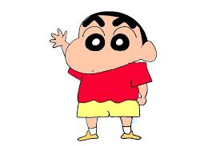
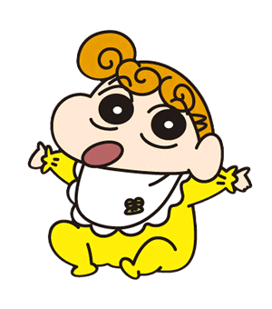
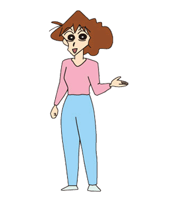

野原新之助本作核心人物，5歲，5月5日生（漫畫版為7月22日生），血型B型，暱稱「小新（日語：しんちゃん Shinchan）」，就讀雙葉幼稚園向日葵班，春日部防衛隊隊員之一。 動畫版招牌服裝為紅色短T-shirt配上黃色短褲、白色襪子和黃色鞋子，髮型為黑色平頭。 最愛的人是大原娜娜子。 喜歡看動感超人、剛達姆機器人和魔法少女可愛P。 最喜歡吃的零食是巧克比（チョコビ）。喜歡把屁屁或大象（生殖器）露出來，經常搭訕漂亮的大姐姐。最討厭吃青椒、洋蔥和紅蘿蔔，擁有gambling的能力，能把自己穿在身上的衣物隨意變化成任何生物的樣貌裝扮。

野原向日葵，有「可惡的尿布怪獸」暱稱（小新稱）。 名字來自對讀者的公開募集，動畫版中則被安排以野原家代代相傳的方式取名。 性格與美冴相似，一樣喜歡帥氣男性，超喜歡閃閃發光的東西（甚至光屁屁怪獸），但若被她發現是便宜貨會立即失去興趣。與小新一樣頑皮，有時也因此被美冴教訓（不會像廣志小新一樣挨拳頭，但會被用其它方式教訓）。
野原廣志，小新的父親，35歲，3月11日生，血型O型，秋田縣人，雙葉商事東京本部第一營業部股長，薪水少，喜歡打高爾夫球和性感的大姐姐，腳相當臭，甚至可作為武器使用。

野原美冴，《蠟筆小新》中的第一女主角，小新的母親，29歲，9月21日生（漫畫版為10月10日），血型B型，身高159.2公分、體重60公斤[3]，熊本縣阿蘇市[4]出身，原名小山美冴（Koyama Misae）， 嫁到野原家後從夫姓，全職家庭主婦。喜歡購買有優惠的東西。常使用「美冴拳」或用「拳頭轉轉」教訓小新和廣志，因此父子二人都非常害怕她。常被小新稱為「三層肥肉老太婆」。
野原小白，野原家飼養的雄性小狗，毛色為白色。原被棄養後由小新收養，野原家智商最高的成員。特技是「棉花糖」（把身體捲成球型）和抓重要部位（稱為抓癢癢）。雖不會說話，但似乎能明白小新說的話。